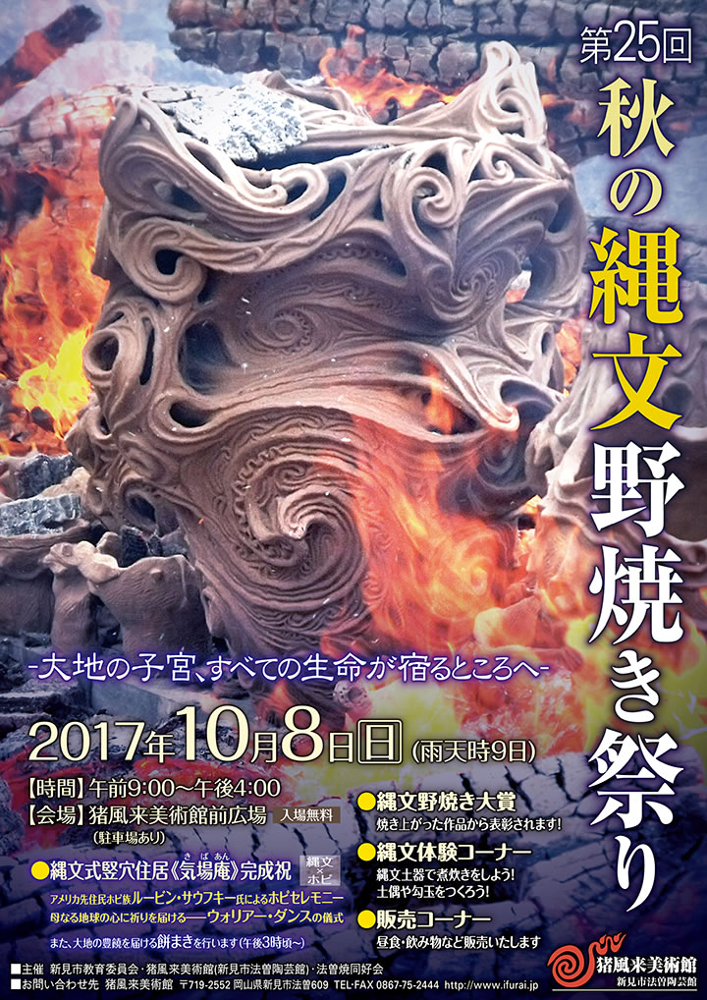

― お知らせ･活動予定 ―
-
■第２５回 秋の縄文野焼き祭り（平成２９年度）
【開催日】２０１７年１０月８日（日）午前９時～午後４時 ※雨天時９日
【会 場】猪風来美術館前広場（駐車場あり）入場無料 -
■鎮魂と復興を祈念して「縄文いのりの土偶」をつくろう
―東日本大震災への祈り―
|  |

|
| 【第２５回 秋の縄文野焼き祭り（平成２９年度）チラシ】 →PDF版を開く |
● 縄文野焼き祭りとは？
1万5千年以上前に日本列島に生まれた世界最古級の土器文化「縄文」を受け継ぎ、大自然の中で太陽と風と
火の力によって焼き上げる“縄文野焼き”。
生命の躍動する文様や縄目の刻まれた作品には母なる大地と心を結び自然の豊饒を祈る心が込められています。
陶芸教室生の作品をはじめ約100点の作品をスタッフや参加者で焼き上げます。
女たちの縄文力にも注目です！
=∴=∵=∴=∵=∴=∵=∴=∵=∴=∵=∴=∵=∴=∵=∴=∵=∴=∵=∴=∵=∴=∵=∴=∵=∴=∵=∴=
《祝！縄文式竪穴住居《大地の気場庵》完成》
大地に抱かれる縄文式竪穴住居は「大地の子宮」「生命の生まれ育まれる場」であり縄文スピリットの中核。
心を寄せる大勢の協力者とともに昨年秋の茅集め、春の木の皮むきと盛土、クリ材の御柱建てと棟上げ、
炎天下の夏の屋根茅葺き作業をへて、悠久の時を越えて縄文の心に感応する空間がついに完成しました。
● 大地へ✌願いの土偶つくり
みんなでメッセージと名前を刻んだ土偶をつくり、気場庵の中に安置します。
あなたは大地にどんな願いを寄せますか？（縄文体験コーナーで受付）
☆ （随時／協力金・一体＝300円 ※土偶の寄付をお願いいたします）
=∴=∵=∴=∵=∴=∵=∴=∵=∴=∵=∴=∵=∴=∵=∴=∵=∴=∵=∴=∵=∴=∵=∴=∵=∴=∵=∴=
《アメリカ先住民ホピ族ルービン・サウフキー氏再訪！》
独自の野焼き土器文化をもつ“平和の民”ホピ族のルービン氏が昨年にひき続き再訪。
彼らもまた祈祷や集会をする大切な場所《キバ》を地下に築きます。ホピクラフト＆ジュエリーの展示や、
竪穴住居完成を祝うホピセレモニー「母なる地球の心に祈りを届けるウォリアーダンス」、野焼きの終わり
には「大地に感謝を捧げるラウンドダンス」の儀式を行います。
《ホピ×縄文ワークショップ》
ルービン・サウフキー×猪風来の対談式講演会（17：00～20：00）
■会場 猪風来美術館第5展示室
■参加費 3,240円（事前の申し込みが必要です）
■お問い合わせ先 → アナンダラバ事務局
=∴=∵=∴=∵=∴=∵=∴=∵=∴=∵=∴=∵=∴=∵=∴=∵=∴=∵=∴=∵=∴=∵=∴=∵=∴=∵=∴=
《縄文野焼き大賞》
この日に焼き上がった作品の中から、とくに素晴らしい縄文造形や縄文スピリットにあふれる作品を選考し、『縄文野焼き大賞』など各賞を表彰いたします。
=∴=∵=∴=∵=∴=∵=∴=∵=∴=∵=∴=∵=∴=∵=∴=∵=∴=∵=∴=∵=∴=∵=∴=∵=∴=∵=∴=
《縄文体験コーナー》
● 縄文土器で煮炊きをしよう！
縄文時代には炉にすえた土器で温かい汁物を作り食べていました。
みんなで土器に薪をくべて、野性味ある汁物を作ってみよう！
☆ （12時頃～／無料）
● 粘土でつくろう！
縄文粘土でちいさな土器、土偶やオブジェを作ってみよう。
縄目文様を入れると縄文の魂が宿ります！
☆ （随時／300円）
● 石でまが玉をつくろう！
まが玉は生命の根源のかたち。
しあわせを祈り魔を祓う力が宿っています。
☆ （随時／黒・ピンク・白各500円）
=∴=∵=∴=∵=∴=∵=∴=∵=∴=∵=∴=∵=∴=∵=∴=∵=∴=∵=∴=∵=∴=∵=∴=∵=∴=∵=∴=
《販売コーナー》
地元の法曽焼同好会が、昼食やお飲み物、法曽焼茶碗や法曽茶を販売いたします。
どうぞご利用ください。
=∴=∵=∴=∵=∴=∵=∴=∵=∴=∵=∴=∵=∴=∵=∴=∵=∴=∵=∴=∵=∴=∵=∴=∵=∴=∵=∴=
● 館内案内
館内では常設展のほか企画展『村上原野 生命の大地展‐JOMON Spiral Nova‐』を開催しております。
ぜひご観覧ください。（観覧料が必要です）
=∴=∵=∴=∵=∴=∵=∴=∵=∴=∵=∴=∵=∴=∵=∴=∵=∴=∵=∴=∵=∴=∵=∴=∵=∴=∵=∴=
■日時 2017年10月8日 〔日〕 9：00～16：00（雨天時9日）
■会場 猪風来美術館前広場 ※入場無料(館内は要観覧料)
■主催 新見市教育委員会・猪風来美術館(新見市法曽陶芸館)・法曽焼同好会
■お問い合わせ先 猪風来美術館 TEL･FAX 0867-75-2444
〒719-2552 岡山県新見市法曽609

|
このたびの東日本大震災による被災に対しまして、心からのお見舞いと哀悼の意を表します。
被害地の惨状と深い悲しみの中で、再起を期して心を奮い立たせている被災者の皆様への応援の気持ちをこめて
「縄文いのりの土偶」をつくりませんか？
古来より縄文の土偶は、豊饒を願い災難をはらい、鎮魂と再生を祈願してつくられたものです。
猪風来美術館では開館以来、「にぎり地蔵」として願い思いをこめた小さな土偶を、陶芸体験の皆さんに
つくっていただいてきました。
野焼きしたお地蔵さまは、一部美術館と済渡寺をつなぐ参道の祠におかれ、「野辺の地蔵さまロード」として
みんなの思いをつなぐスポットになっています。
２０１０年４月１６日に開催された「春の縄文野焼き祭り」の縄文体験コーナー「にぎり地蔵をつくろう」では
『震災地への思いや気持ちをこめて「縄文いのりの土偶」をつくり、被災された方々へ思いをつなげよう』
との趣旨で呼びかけをさせていただきました。
その際、みなさまに多くのご理解とご賛同をいただきました。
復興はおそらく、これから長くかかることでしょう。
そのため「縄文いのりの土偶」づくりの活動もまた、継続していきたいと思っております。
どうぞ御協力よろしくお願いいたします。
※ 参加費300円は全額、復興義援金として寄付させていただきます。
※ 制作された「縄文いのりの土偶」のご寄付をお願いします。
※ 後日縄文野焼きされた「縄文いのりの土偶」の安置場所は検討させていただきます。